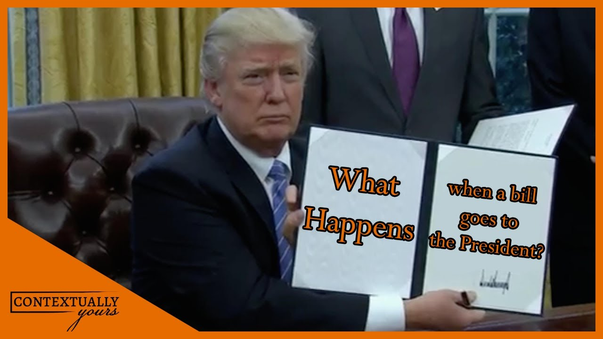

The President can take one of several possible actions: The president may take no action. If Congress is in session, the bill automatically becomes law after ten days.A pocket veto occurs when the president takes no action and Congress has adjourned its session. In this case, the bill dies and does not become a law. The president may decide that the bill is unwise or unnecessary and veto the bill. The president may sign the bill, and the bill becomes law.

Previous Next